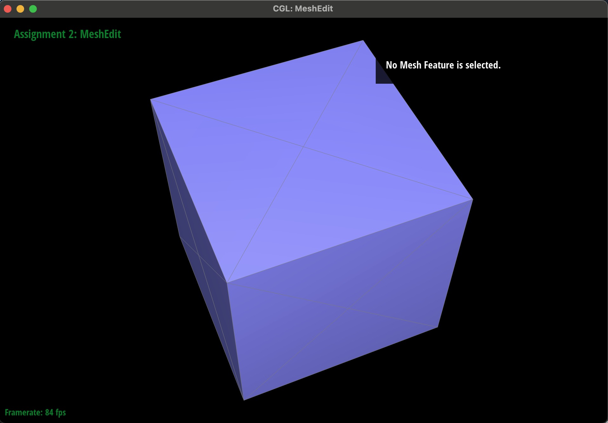

CS184/284A Spring 2025 Homework 2 Write-Up
Link to webpage: https://cal-cs184-student.github.io/hw-webpages-kate-trevor-1/hw2/index.html
Link to GitHub repository: https://github.com/cal-cs184-student/sp25-hw2-beezgeez
Overview
In this assignment, we implemented Bezier curves and surfaces using seperable 1D de Casteljau's algorithm. Additionally, we used the half-edge data structure to implement area-weighted normal vectors at vertices for Phong shading and remeshing operations such as edge flipping and splitting. We also implemented a mesh upsampling method, loop subdivision, to create a higher resolution mesh.Section I: Bezier Curves and Surfaces
Part 1: Bezier curves with 1D de Casteljau subdivision
De Casteljau Algorithm recursively subdivides using linear interpolation to calculate a point on the Bezier Curve. In order to implement the recursive step, we calculated the intermediate points by iterating through the control points and interpolating between them.
Linear interpolation formula for finding intermediate points:
\( (1-t) * p_i + t * p_{i+1} \)where \( p_i \) and \( p_{i+1} \) are the control points and \( t \) is a parameter value specified in bezierCurve.h. New points are then stored and returned in a vector.
For example, using 6 control points, we can visualize the intermediate levels towards the final point using the "E" hotkey and the visualize the final curve by pressing "C."

|
|
|
|
|

|

|
We are also able to move the control points and change parameter "T" to create an alternative curve.

Part 2: Bezier surfaces with separable 1D de Casteljau
De Casteljau algorithm extends to Bezier surfaces through the subdivision of control points in first the u, then v direction. This is done by creating a separate evaluateStep method to calculate intermediate points given as Vector3Ds parameters. We then called on evluateStep multiple times, using u as our t parameter to form a row of points. Points retrieved here are then used as control points and v is used as the t parameter to return the final point.

Section II: Triangle Meshes and Half-Edge Data Structure
Part 3: Area-weighted vertex normals
To implement area-weighted vertex normals, we began by finding the three vertices of each face from the provided Half-Edge and calculated a third, perpendicular vector by taking the cross product of the two vectors. We repeated this process for each face and called on the unit method to produce the final area-weighted normal of a given vertex.

|

|
Part 4: Edge flip
Since we don't want to flip boundary edges, the first part of our code is a check that just returns the inputted edge if it is a boundary. To figure out how to reassign pointers for this part, based on the definitions for the data structures given in lecture, we mapped out how the mesh would look before and after flipping one edge.
|
|
|
|
|
|
h1 and h4 only had its next value changed, we set its neighbors first. Then we set h2 and h5 since we could use the references to f0 and f1 using h1 and h4, and we finished by setting h0 and h3 last.
We aren't entirely sure why we needed to define the face pointers to finish this task, but we found that if we didn't, sometimes flipping the edges would cause the face to disappear (summarizes our debugging journey).
|
|
|
Part 5: Edge split
Since we don't want to split boundary edges, the first part of our code is a check that just returns the inputted edge if it is a boundary. To figure out how to reassign pointers for this part, based on the definitions for the data structures given in lecture, we mapped out how the mesh would look before and after splitting one edge.isNew values for the vertices and the position for v4 as the midpoint of v0 and v1.
|
|
|
|
|
|
Part 6: Loop subdivision for mesh upsampling
In order to implement loop subdivision, we began by calculating the updated positions for the old and new vertices. We began by iterating through the old vertices and storing the new positions into Vertex::newPosition.
These were calculated using the formula:
\( ((1 - n * u) * original Position + u * original Neighbor Position Sum) \)
where \( n \) is the number of neighbors (vertex degree) and \( u \) is 3/16 if the vertex has three neighbors and 3/(8n) otherwise.
We defined the new vertex position given 4 vertices, A, B, C, and D as:
\( (3/8 * (A + B) + 1/8 * (C + D)) \)
To retrieve vertices A, B, C, and D, we looped through the mesh edges and stored our resulting vertex into edge's newPosition. When iterating through both the original vertices and edges, we made sure to set isNew to false.
After finding all the new positions, we iterated through the edges again and called splitEdge on all of the old edges. To do so, we check that both of the corresponding vertices were old. The resulting VertexIter's newPosition was set to the new position of the edge (retrieved in the previous part). Inside of the splitEdge method, reassigning the new edges as isNew (true or false) was taken care of.
In order to flip the edges. we iterated through the edges one last time. If the edge corresponded to an old vertex and a new vertex and the edge returned true for isNew, we called flipEdge.
Our final step was looping through all of the vertices and reassigning the vertices newPosition to its Position, promptly setting us up for any future upsamplings.
Cube Subdivisions
|  | ||
After subdividing, the sharp corners and edges become more rounded and smoother. Additionally, the number of faces and vertices increases, creating a more detailed mesh.
The cube is asymmetic after repeated subdivisions since each face only had one diagonal edge (unequal). We can conduct some pre-processing by splitting across the middle of each face and creating a diagonal edge. This way, the cube will subdivide symmetrically.
Given the multi-step process, we found it simpler to break down the individual steps when debugging. For example, when running into infinite loops, we commented out the edgeSplitting iteration and reran to code. When the code ran smoothly, we narrowed down our focus and began checking our logic for the splitting process. This way, we were able to catch smaller bugs in our conditionals and ensure that we were properly assigning isNew throughout each step.